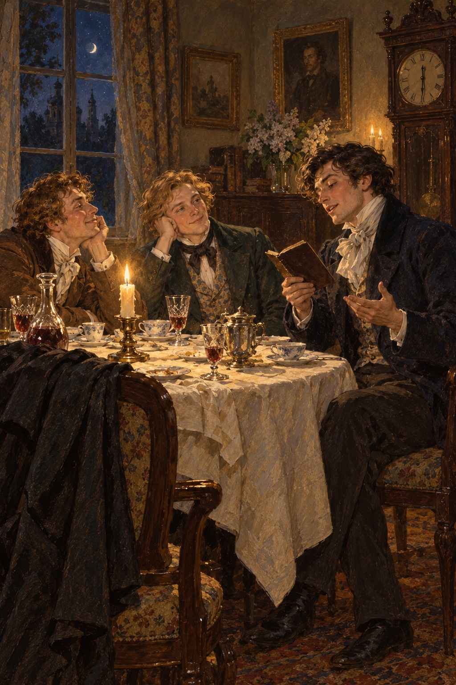

Ivan Turgenev · First Love
도입부
파벨 바실리예비치 안넨코프에게 바친다.
손님들은
떠난 지 오래였다.
시계가
열두 시 반을 알렸다.
방에는
세 사람만 남아 있었다.
집주인과
세르게이 니콜라예비치,
블라디미르 페트로비치였다.

집주인은
종을 울려
남은 저녁상을 치우라고 했다.
“그럼 정해진 거군요.”
그는
안락의자에 몸을 더 깊이 묻고
시가에 불을 붙이며 말했다.
“우리 셋이
각자의 첫사랑 이야기를 하는 겁니다.
세르게이 니콜라예비치,
당신 차례예요.”
세르게이 니콜라예비치는
얼굴이 희고 포동포동한
둥글둥글한 사람이었다.
그는
집주인을 한번 바라보고
천장으로 눈을 들었다.
“저한테는
첫사랑이 없었습니다.”
마침내 그가 말했다.
“바로 두 번째부터 시작했거든요.”
“그게 무슨 말입니까?”
“간단해요.
열여덟 살 때
꽤 귀여운 아가씨 뒤를
처음으로 쫓아다녔지요.
그런데 처음이 아닌 사람처럼
능숙하게 구애했습니다.
나중에 다른 여자들에게
하던 것과 꼭 같았어요.
엄밀히 말하면
처음이자 마지막으로 사랑에 빠진 건
여섯 살 무렵의 유모였지요.
하지만 너무 오래된 일입니다.
그때의 일은
이제 기억도 나지 않아요.
기억난다 해도
누가 듣고 싶겠습니까?”
“그럼 어떻게 하죠?”
집주인이 말을 받았다.
“제 첫사랑도
그리 재미있지는 않아요.
지금의 아내인
안나 이바노브나를 만나기 전에는
누구도 사랑한 적이 없거든요.
부모들이 혼담을 맺어 주었고,
우리는 금세 서로 좋아졌고,
지체 없이 결혼했지요.
두 마디면
이야기가 다 끝납니다.
사실 첫사랑 이야기를 꺼낸 건
두 독신자분에게 기대를 걸었기 때문입니다.
나이가 많다고 할 수는 없어도
젊다고도 못 하실 테니까요.
블라디미르 페트로비치,
우리를 즐겁게 해 주시겠습니까?”
“제 첫사랑은
확실히 좀 유별난 편입니다.”
블라디미르 페트로비치가
잠깐 말을 더듬으며 대답했다.
그는
검은 머리가 희끗희끗해진
마흔 살가량의 남자였다.
“그거 잘됐군요!”
집주인과 세르게이 니콜라예비치가
한목소리로 외쳤다.
“어서 들려주세요.”
“그러죠.
아니, 말로 하지는 않겠습니다.
제가 이야기를 잘 못해서요.
말하면
너무 메마르고 짧아지거나
공연히 길고 꾸민 이야기가 됩니다.
괜찮으시다면
기억나는 대로 공책에 적었다가
읽어 드리겠습니다.”
친구들은
처음엔 반대했지만,
블라디미르 페트로비치는
뜻을 굽히지 않았다.
두 주 뒤
그들은 다시 모였고,
그는
약속을 지켰다.
그의 공책에는
이렇게 적혀 있었다.